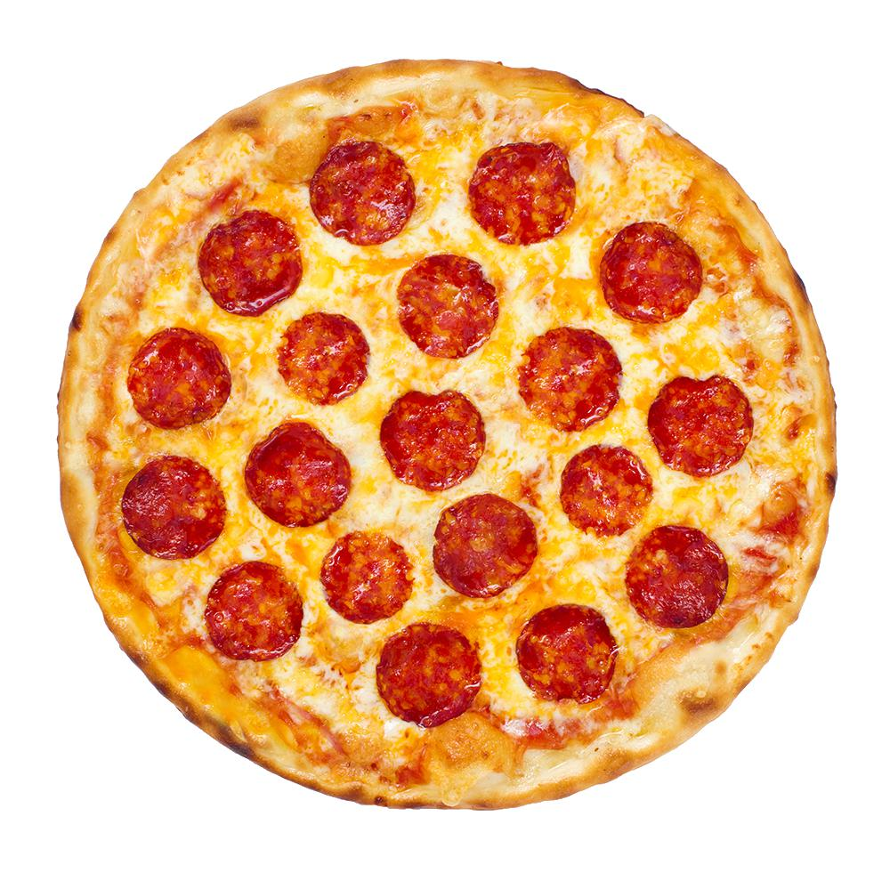

Description
Tasty and healthy option for Pizza!
Ingredients
- cooking spray
- 4 large portobello mushroom cups, gills removed
- 3 tablespoons extra-virgin olive oil
- 1 pinch salt and ground black pepper to taste
- 2 cups sliced fresh mozzarella cheese, divided
- ½ cup sliced cherry tomatoes
- ½ cup chopped fresh basil
Recipe Intructions
- Preheat oven to 375 degrees F (190 degrees C). Line a baking sheet with aluminum foil and spray foil with cooking spray.
- Arrange mushrooms, top-side down, on the baking sheet. Drizzle olive oil over mushrooms and season with salt and pepper. Layer 3/4 of the mozzarella cheese onto mushrooms and top with tomatoes and basil. Cover the top with remaining cheese.
- Bake in the preheated oven until mushrooms are tender and cheese is melted, 20 to 25 minutes.
Return to front page
Return to top